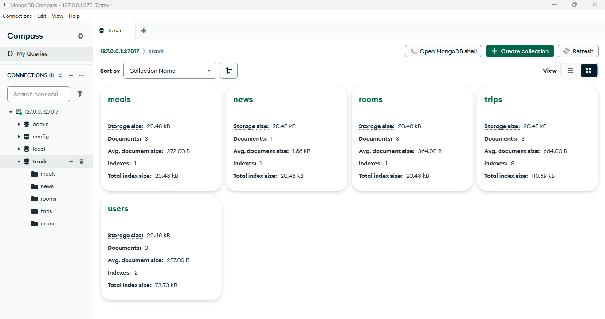
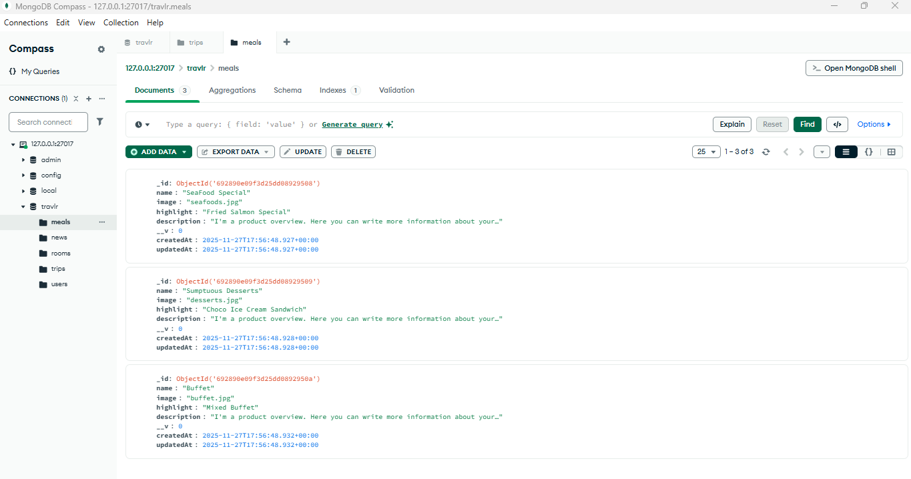
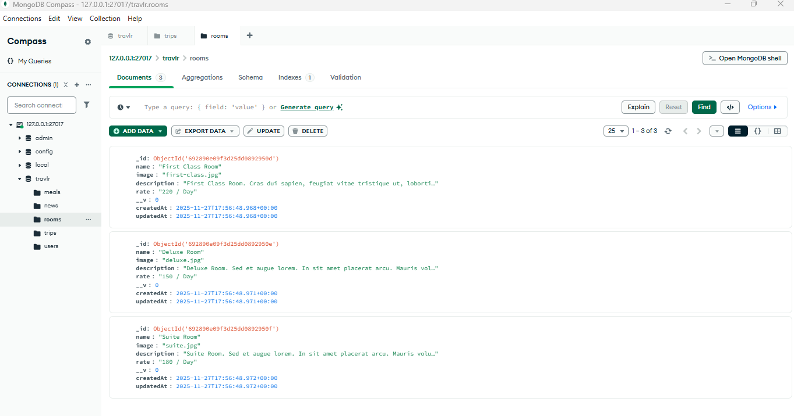
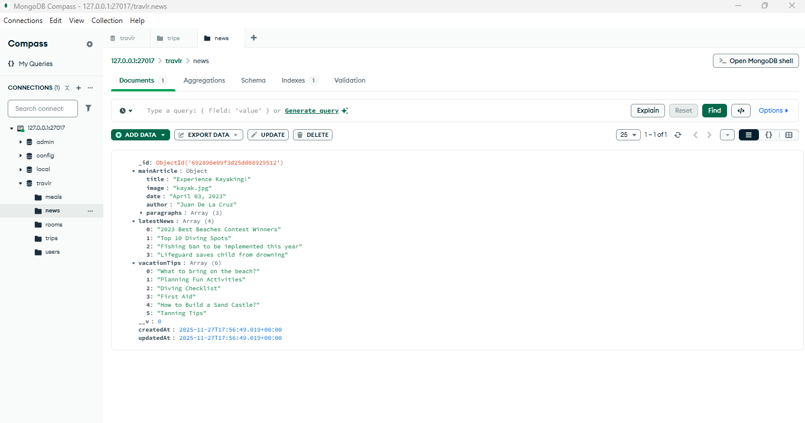
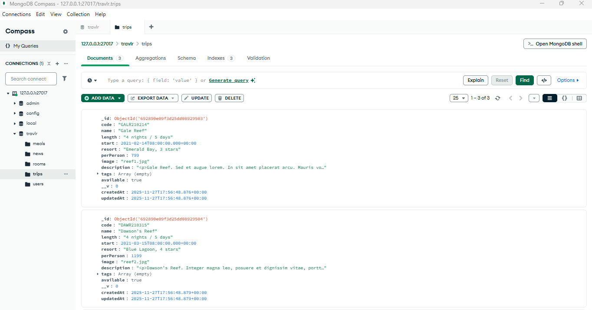

Databases Enhancement: Travlr
CS-499 Capstone
/
Databases
This enhancement focuses on improving the database design of my Travlr full-stack web application, which was originally developed for the CS-465 Full Stack Development I course. The goal of this update was to make the project fully database-driven and easier to maintain.
Overview
Travlr is a full-stack web application that simulates a travel booking website. It includes a public-facing site where users can browse trips, rooms, meals, and travel-related news, along with an admin interface used to manage this content.
In the initial version of the application, the database was primarily used for the `Trips` feature. Other sections, such as `Meals`, `Rooms`, and `News`, pulled their information from local JSON files instead of the database.
This enhancement converted the entire application to use MongoDB. All major content is now stored in the database and accessed through the API, creating a more consistent and realistic full-stack design.
Enhancement Overview
- Moved all major application content into MongoDB.
- Removed reliance on local JSON files.
- Created a single, centralized data source.
- Improved maintainability and scalability.
Technical Updates
- Created MongoDB collections for meals, rooms, and news.
- Defined Mongoose models for each content type.
- Added API controllers to retrieve database records.
- Updated server-side controllers to replace JSON file usage.
- Expanded the seed script to populate all collections.
Files Updated
app_api/models/ — Added Meals, Rooms, and News models.app_api/controllers/ — New database-driven controllers.app_server/controllers/ — Updated to use MongoDB data.seed.js — Expanded to support all collections.
Outcome & Reflection
This enhancement supports the Computer Science program outcome related to database design and implementation. By using MongoDB across the entire application, the project now reflects real-world full-stack development practices.
Completing this enhancement improved my understanding of how data is managed across a full-stack application. It highlighted the importance of having a single, reliable data source and reinforced how changes to one part of a system can affect other areas.
Challenges
-
Updating existing pages so they could load information from the database instead of local files, while making sure nothing broke during the transition.
-
Making sure information was displayed correctly on each page after switching to database-based data, since some sections expected the data in a specific format.
-
Preparing sample data that worked properly with the new database setup so the application could be tested and demonstrated without errors.
Overall, this enhancement improved the structure and quality of the Travlr application. It strengthened my backend development skills and resulted in a stronger artifact for my ePortfolio.
GitHub & Tools
View the database enhancement work on GitHub:
View on GitHub
Technologies
- MongoDB
- Mongoose
- Node.js
- Express
- Angular
Screenshots
The following screenshots highlight how data is stored, accessed, and displayed throughout the Travlr application after the database enhancement.
Database Collections
-

All Collections
-

Meals Collection
-

Rooms Collection
-

News Collection
-

Trips Collection
API Endpoints
-

Trips API
-

Meals API
-

Rooms API
-

News API
Public Website Pages
-

Home Page
-

Trips Page
-

Meals Page
-

Rooms Page
-

News Page